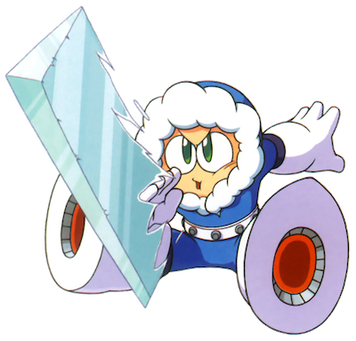

This is the main walkthrough section of the website. You can play through the levels in the order suggested in the table of contents below; there will be buttons at the bottom of each section to take you to the next and previous parts. Alternatively, you can click on one of the levels in the table if you need help with a specific level.
Table of Contents
E) Ice Man's Stage
Reaching The Boss
Time to kick off the second half of the robot master levels, starting with Ice Man's stage. The background in this level is quite beautiful, and reminds me of Ice Cap Zone from Sonic the Hedgehog 3. You'll be travelling through an icy tundra (no surprise there, considering who the boss is), and later in the stage, platforming over some wide bottomless pits. There'll be ice physics here, so keep that in mind before you go slip slidin' away. Also, the boss is weak to the Thunder Beam you just got, so save some of its energy for the end of the level.
You might've noticed by now that so far, each robot master has been weak to the weapon we got from the one in the previous level. That trend is going to continue for these last three robot masters, but I'll be sure to keep reminding you at the start of each level, just in case you forget. This is why I suggested you play through the levels in this particular order; it makes the bosses a lot easier to tackle. The Mega Man games are about experimenting and seeing which weapons work best against which enemies/bosses (but, of course, a handy guide makes things a lot simpler).
Start moving right to encounter an enemy that can be totally harmless or a pain in the neck depending on how you attack it. These green guys are called Crazy Razies. If you shoot their head, they will go down in a single hit, but if you shoot their bodies (or even if you don't attack them at all) their head will detach and start zooming around like a helicopter, and you'll probably take damage. If this happens, shoot at the now detached head as it whirls towards you to kill it; thankfully, it takes only a single hit in this flying form also.
Make your way along up the ledges. The slippy ground here makes the Razies even more annoying to beat. After about 4 of them you'll reach a body of water which you'll have to jump into to continue. This is the first time we've seen water so far; it makes you walk slower inside it but also allows you to jump for longer, a bit like you're on the moon. This can be both a blessing and curse.
In the second pit in the water there is a spike trap. It's fairly easy to avoid because you can just jump over the pit, but you're going to see a penguin with a propeller on its face known as a Pepe flying at you in a wavy pattern. By themselves, the spike traps and Pepe enemies are manageable, but combined they might cause you a lot of trouble if the Pepes keep knocking you down into the spike traps. Keep moving right and jumping over the traps while shooting forward to kill the Pepes. If you are having a bad time, it's a good idea to use the Rolling Cutter to take out some of the spike traps. It can also take out some of the pesky penguins at the same time.
After traversing through many of these enemies, you'll get to a point where you can climb out of the water again to reach dry land... or at least, icy land. Luckily the spike traps are gone now but the Pepes still remain. They're so much less worrisome now though, as you can just shoot ahead and not worry about falling into a trap.
Speaking of falling into things, there'll be two places where you can drop down here as you reach a dead end. The rightmost one will lead you to the next part of the level so drop down at the left first and shoot at the 2 Suzies to your left (try not to slide into them!) to clear a path to a refreshing large health pickup. Now, drop down at the right through what looks like some kind of blue chute to find a magic block puzzle. I highly recommend you use the Cutter to get rid of the blade trap here first before attempting to get up the blocks. When it's gone, you can now focus on learning the pattern without that annoying thing causing you damage every few seconds, so do so and use some well-timed jumps to reach another chute at the top left. Fall down it.
Another block puzzle! Slightly different this time but still use the Cutter again to rid yourself of this blade trap. Learn the block pattern and use them to reach the top right, where we'll be back outside in the freezing snowy tundra again. Except, move right a little and... aah! No ground! It's time to cross a massive bottomless pit, and to do it, we'll have to use these enemies called Foot Holders which are shaped conveniently like platforms...
...Or will we? Using the Magnet Beam we got from Elec Man's stage, we can just make our own platforms out of thin air! Make them as small or as long as you want (longer button holding equals longer platform) and get across this 'challenge' scot free! You'll still need to be careful though as the Foot Holders will shoot projectiles at you, most likely as a form of revenge for not standing on them. Also, make sure you don't stay on one of your platforms for too long, as they disintegrate after about a second. Probably should have mentioned that earlier.
If you don't have the Magnet Beam yet (you should!), you'll just have to jump on the enemies and use them. Their movements are erratic and unpredictable, meaning that you might have to wait a while for them to get close enough to each other for you to jump to the next one. You're gonna end up needing to take a few leaps of faith here. Hopefully they pay off. The fact that they're shooting at you while you're trying to board them is very counterproductive...
When you reach the halfway point of this pit, you'll be able to drop down to grab a big weapon energy refill on a white ledge below. You'll probably want this for your Magnet Beam, or maybe the Cutter if you've been using it a lot so far in this level. As you platform precariously over the latter half of the death pit, Pepes will start swooping in from the right, as if things weren't already hard enough... Try and make sure these damn penguins aren't the death of you. I wouldn't try to shoot them, just avoid them. It could work well to use both the Magnet Beam and the enemy platforms together to keep making your way across; I find that works kinda well.
However you manage it, when you get to sweet land again, you'll have another chute to drop down through to the right. Try to hold against the left wall as you're falling so you can get into the narrow alcove and get an extra life, then keep falling, again holding left so that when the next room loads you can get into the alcove with the goodies here. If you miss, you could also use the Magnet Beam to make a platform up to it. Get the 3 small health refills and the 3 small weapon refills for the weapon(s) of your choice, then fall down the next chute to the bottom left.
Of course, we wouldn't be nearing the end of the level without a Big Eye, would we? You can actually use the Magnet Beam to get over it unscathed. Otherwise, use the normal strategies; shoot at it loads and hope it jumps high over you so you can get to the right. It could be a bit more challenging than usual with the addition of the slippy floor. Whatever happens, head right to the sliding doors we love to see. As usual, we have a few weak enemies to beat before the boss; this time, a couple of Pepes. Just hold right to run and keep shooting. You'll be fine. Equip the Thunder Beam (it should have full weapon energy as we've not needed to use it at all in this level, which is good) and run through to the boss!
Boss Fight: Ice Man
Ice Man's weak to the Thunder Beam and just three shots from it will kill him. This can actually be one of the easiest fights and you can take him down in about 4 seconds without even getting hit. Simply stand at the very left corner of the room and keep pressing the shoot button to fire electricity at him. He's going to shoot 6 ice projectiles at you. They travel in a straight line towards you, in three rows. The order of his shots will be the same every time: top, middle, bottom and then bottom, middle, top. You can quite easily avoid them though if you're good with timing it and can jump twice at the right time, without even moving left or right. Just keep in mind that any ice beams he shot will keep moving after he dies so you might actually have to dodge them for an extra second before getting the sphere to finish the level.
If you don't have the Thunder Beam, then the next best weapon that will damage him is Bomb Man's weapon. Otherwise, just stick with the Mega Buster but it'll take longer. Also, if for some reason you decide to run up close to him, he'll just try to run away from you and keep firing his ice beams.
Once he's been melted, grab the sphere to earn his weapon!
New Weapon: Ice Slasher
Believe it or not, the Ice Slasher doesn't actually damage enemies or bosses (with very few exceptions). Instead, it freezes them for a short moment, allowing you to stop them in their tracks and change to a different weapon that can hurt them. This is especially useful against flying enemies like the Pepes we saw in this stage, and Big Eyes.
With that done, let's choose a level which is the 'polar' opposite: Fire Man's stage.